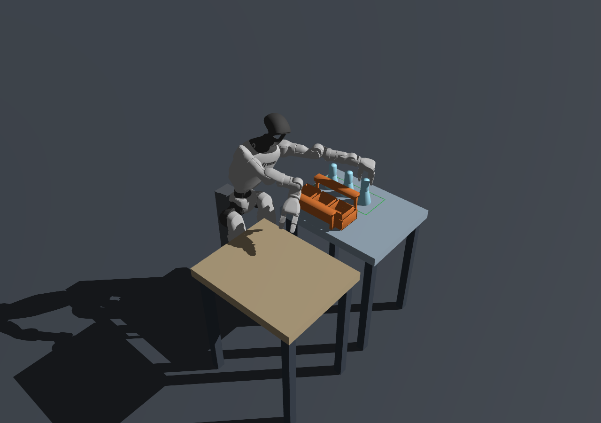
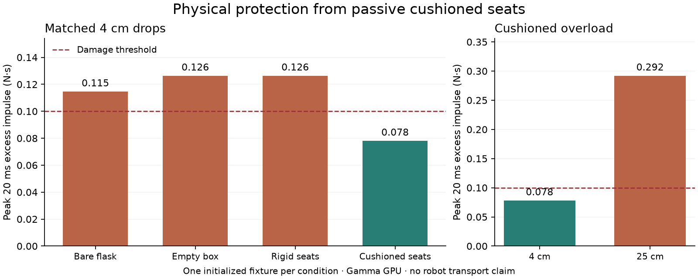

GAMMA GPU · 0.1.0
Fragile Flask Transport
Deliver three flasks intact from table A to the marked region on table B. The optional carrier has real retaining slots and passive spring-damper seats; careful direct delivery can also succeed.
Three-flask fresh runs 3/3; single-flask 1/1; independent physical replays 2/2. All 39 software tests and nine mechanism checks pass.
Fixed-pelvis G1, exact nominal scenes and a privileged designer reference. The owner approved the task and reference for formal release as 0.1.0. Randomized success rates, a sensor-only sandbox and full benchmark technical admission remain unverified. The historical 14-task inventory is unchanged.
GitHub Release · Full reproduction packet · Offline video review
The repository and release retain their existing private access policy.
Task and success
Every flask must remain intact, leave the carrier, be directly supported by table B inside the goal, and stay released and stable for two seconds. Damage uses the measured 20 ms excess-contact-impulse window, with a 0.10 N·s threshold. Packing status does not grant immunity or determine failure.
Reference sequence: bring the carrier closer → load three flasks → carry by both handles → set down → unload and release each flask. This is neither an agent instruction nor a scoring prerequisite.

Physical evidence and reproduction
Genesis 1.4.3 · 64-bit GPU physics · 400 Hz / 50 Hz · G1 Dex3 · 43 joints.
README · Publication and downloads · Reproduction guide · Release checks

SHA-256: d5113600a5b2eec1c9c360f041e8468b38b50c77e9af959e804aaa8a7edb2b91
Approved · formal reference release
Owner approval is recorded. The verified rc1 packet is reused unchanged; pending-review fields inside it describe the historical pre-approval snapshot. The linked approval record gives the current decision.
Reference videos and per-run validation
Videos show the two independent physical action replays for the nominal three-flask and single-flask scenes. These are the reported 2/2 replays, not additional fresh runs. Pause or seek to inspect packing, transport and unloading.
| Record | Kind | Flasks | Simulation / s | Peak impulse / N·s | Result |
|---|---|---|---|---|---|
| single | Fresh run | 1 | 266.45 | 0.09183 | Pass |
| single-replay | Action replay | 1 | 266.45 | 0.09183 | Pass |
| multi-1 | Fresh run | 3 | 552.11 | 0.09581 | Pass |
| multi-2 | Fresh run | 3 | 567.04 | 0.09455 | Pass |
| multi-3 | Fresh run | 3 | 567.04 | 0.09455 | Pass |
| multi-replay | Action replay | 3 | 552.11 | 0.09581 | Pass |
This is the selected nominal release cohort, not a randomized success-rate estimate; 69 development attempts are retained separately.
Per-run checks JSON · Publication receipt · SHA-256 manifest